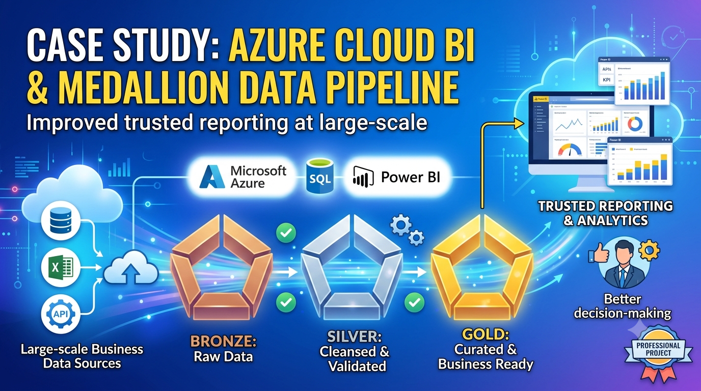
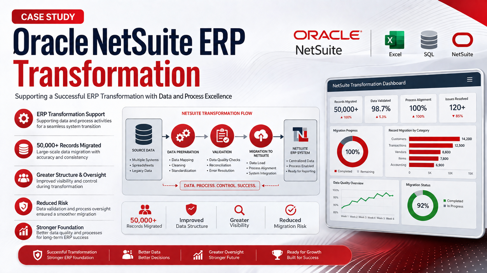
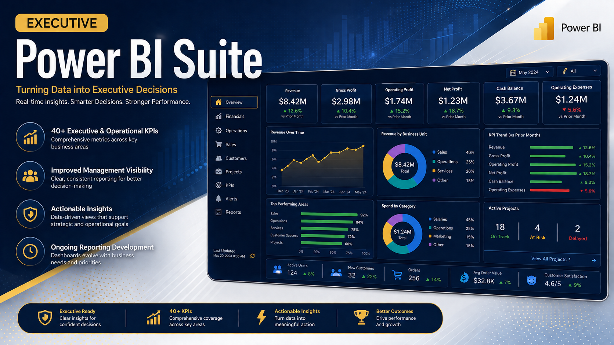
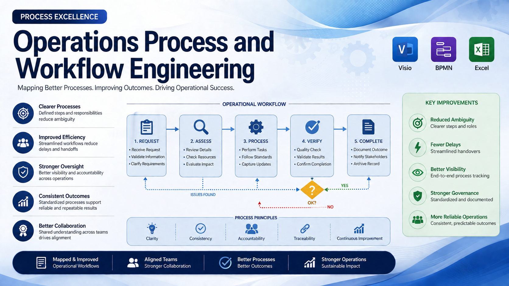
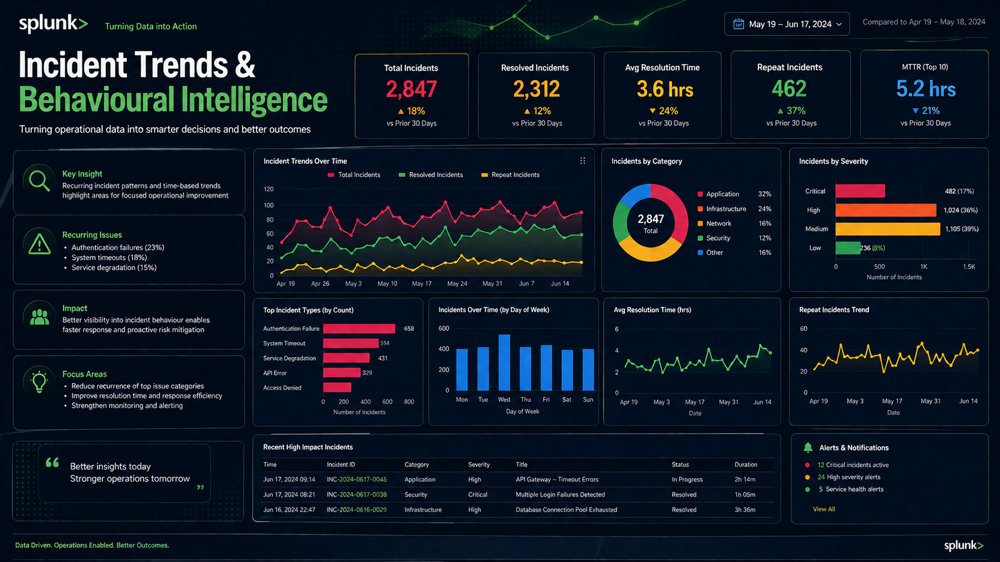
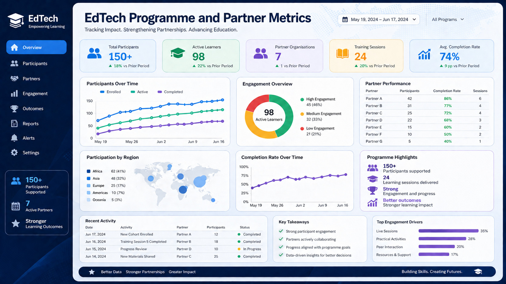

Records analysed
Supported an Azure Medallion Architecture project with large-scale data processing and reporting.
Peace Michael is an MSc Data Science graduate with experience in data analysis, business intelligence, process improvement, ERP implementation, cloud data pipelines, reporting, and operational transformation.

Portfolio profile
I'm a Data Analyst and Business Intelligence professional pursuing an MSc in Data Science at York St John University, London. With 3+ years of hands-on experience across business process analysis, ERP implementation, and cloud-based analytics, I bridge the gap between raw data and strategic business decisions. I've led organisation-wide digital transformation, managed the migration of four core business departments to Oracle NetSuite ERP, and built 40+ executive dashboards. My MSc capstone project involves designing a cloud-based big data analytics pipeline on Microsoft Azure processing millions of records.
Read more about PeaceProfessional profile
Peace connects business needs with data and technology through thoughtful analysis, practical problem solving, and clear stakeholder communication. With experience spanning data analysis, business intelligence, dashboard development, ERP implementation, process mapping, cloud data pipelines, and operational improvement, Peace supports organisations in making stronger and more informed decisions.
The focus is on turning complex information into understandable insight, creating operational visibility, and supporting change that is useful for both leadership teams and day-to-day teams.
Supported an Azure Medallion Architecture project with large-scale data processing and reporting.
Contributed to ERP transformation activity through accurate migration planning and data coordination.
Developed executive and operational KPIs to improve visibility across business functions.
Built operational tracking systems that helped support programme delivery and performance monitoring.
Portfolio highlights

Cloud & Data Engineering
Built a scalable data foundation to support reporting and analytics across structured business data.
Result: Improved access to trusted data for reporting and analytical use.

Business Process Improvement
Supported data migration and process readiness during an ERP transformation focused on operational continuity.
Result: Helped move more than 50,000 records with greater structure and oversight.

Business Intelligence
Developed more than 40 Power BI metrics to help managers monitor sales, finance, HR, and inventory performance.
Result: Strengthened executive visibility and reporting consistency.

Business Process Improvement
Mapped operational workflows, identified process gaps, and improved handovers across functions.
Result: Simplified oversight and improved day-to-day process reliability.

Data Analytics
Analysed incident patterns and operational data to reveal recurring issues and support monitoring.
Result: Improved visibility into trend behaviour and underlying risk factors.

Business Intelligence
Tracked participant engagement and partner performance through structured reporting and dashboard views.
Result: Supported more than 150 participants with stronger operational visibility.
Analytics showcase
Board-ready reporting for performance monitoring across multiple functions.
View projectStructured data movement and transformation supporting trusted reporting layers.
View projectOperational reporting that supported programme oversight and stakeholder visibility.
View projectCareer journey
Cross-functional business and analytics environments
Programme and service delivery environments
Capabilities
Education & credentials
York St John University
Relevant modules included data analysis, statistics, machine learning, data engineering, and applied analytics.
Certifications and training should be added here to reflect the portfolio’s current credentials.
Contact
Open to opportunities across consulting, financial services, technology, and corporate environments. Whether supporting strategy, reporting, transformation, or operational insight, Peace is keen to contribute with clarity and impact.